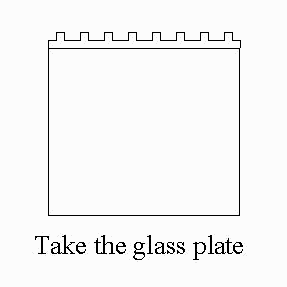

SODIUM DODECYL POLYACRYLAMIDE GEL ELECTROPHORESIS (SDS- PAGE)
Principle Reagent Test Procedure Result Interpretation Animation
Polyacrylamide gel electrophoresis in the presence of sodium dodecyl sulphate (SDS-PAGE) is one of the most commonly used biochemical techniques for the characterization and analysis of proteins. It has been extensively used to determine the molecular weight of polypeptide chains and to establish the homogenicity of protein preparations. In addition, it has also proved to be a very valuable tool in the solubilization and fractionation of amphiphilic proteins. The acceptability of SDS-PAGE has been greatly expanded and enhanced by the development of two dimensional electrophoresis and protein blotting (western Bolt) techniques.
Rf = A - B log10 M.W.
Where Rf = relative mobility
M.W. = molecular weight
A & B = constant for a particular experimental system
Thus, the size of the polypeptide chain(s) of a given protein can be determined by comparing its electrophoretic mobility in SDS gels with the mobilities of marker proteins of known molecular weights.
Interaction of SDS with proteins
The empirically established relationship between electrophoretic mobility and polypeptide chain molecular weight suggests a general mechanism for the interaction of SDS with proteins. The electrophoretic mobility of a polypeptide chain can be a function solely its molecular weight only if the charge per unit mass (e/m) is approximately constant, and the hydrodynamic properties are a function only of the molecular length of the polypeptide chain.
To a first approximation, both criteria are met under the conditions of SDS-PAGE. SDS binding studies of a variety of different proteins indicate that above a SDS monomer concentration of 8 X 10-4 M (0.02%, w/v), 1.4 g of SDS is bound per g of protein. This means that the number of bound SDS molecules is approximately equal to half the number of amino acid residues present in the polypeptide chain. This high level of binding and the constant binding ratio will in general "swamp out" the native (intrinsic) charge contribution of most proteins, and approximately constant negative net charge per unit mass will be obtained. The resulting SDS protein has been found to contain a high degree of secondary structure. Hydrodynamic and optical studies indicate that these complexes behave as rod like particles (prolate ellipsoids) in which the particle length varies uniquely with the molecular weight of the polypeptide chain. Based on this model of SDS-protein interaction, any chemical property of a given protein which would interfere with the average SDS binding, or cause deviations from the typical average charge per unit mass relationship, may be expected to induce an abnormal behaviour of the protein upon SDS-PAGE. Anomalies of this sort however, can usually be detected by carrying out the electrophoresis of both sample proteins and molecular weight markers at a number of different gel concentrations and compiling a Ferguson plot of each polypeptide.
There are numerous published buffer systems for carrying out SDS-PAGE. They can be broadly classified either as continuous or discontinuous (multiphasic) buffer systems, with variations coming mainly from differences in pH and /or addition of urea. In a continuous buffer system, the same buffer ions are present throughout the sample, gel and electrode vessels (although possibly at different concentrations in each) at a constant pH. An example of a commonly used continuous buffer system for SDS-PAGE is the phosphate buffer system of Weber & Osborn (1975). In contrast, discontinuous buffer systems employ different buffer ions in the gel and the electrode reservoirs. In addition, they also have discontinuities in buffer composition and pH as well as pore size. The SDS-Tris- Glycine buffer system is an example of a disconuous buffer system for SDS-PAGE, and it is said to provide better resolution than the standard SDS - phosphate system.
Uniform concentration versus pore gradient polyacrylamide gel
SDS-PAGE can be carried out in either uniform concentration or pore gradient polyacrylamide gels. For any given uniform concentration gel, it is important to realize that the linear relationship between log10 M.W. and relative mobility is valid only over a limited range of molecular weight. As a general rule, the following guidelines can be followed :
Buffer system Gel concentration M.W. range
SDS-Phosphate 15% 12 - 45 kDa
10% 15 - 70 kDa
5% 25 - 200 kDa
SDS-Tris-Glycine 12.5% 15 - 45 kDa
(with 10% and 5% gels, the upper limit is similar to the SDS-phospahte buffer system, but polypeptides with molecular weights less than 16 kDa and 60 kDa, repectively, have the same mobility as the buffer (dye) front)
Thus, it is important to choose an optimal gel concentration to effect fractionation and estimate the molacular weight of polypeptide chains for a given buffer system. Recently, pore gradient polyacrylamide gel has become more widely used for SDS-PAGE. When compared with uniform concentration gel, pore gradient gel gives superior resolution and sharper bands. In addition, it is also able to separate proteins of widely different sizes on a single gel. Thus this method can be used to estimate the molecular weights of polypeptide chians over a much wider molecular weight range. The molecular weight values are given by the equation :
Lag10 M.W. = a log10 T + b
( where T is the total acrylamide concentration reached by the protein, a and b are the slope and intercept, respectively of the linear regression line which is established from measurements of a set of standard proteins run in the same slab gel)
Thus a plot of log10 T should be linear for any shape (linear, concave and convex) of concentration gradient. However, the calculation of T is simplified by using linear gradients, since to a first approximation, a plot of log10 M.W. versus log (migration distance) is linear. As for uniform concentration gel, the range of molecular weights over which the above linear relationship holds depends on the gradient condition chosen. Thus, linear relationships have been found for the following gradient gels and molecular weight ranges :
5% - 20% T (% C = 2.6), molecular weight rane, 14.3 kDa - 210 kDa
7% - 25% T (% C = 1.0), molecular weight rane, 14.3 kDa - 330 kDa
3% - 30% T (% C = 8.4), molecular weight rane, 13.0 kDa - 950 kDa
[ % T = ( acrylamide + bisacrylamide )/ volume x 100
% C = bisacrylamide / (acrylamide + bisacrylamide) X 100]
Low Molecular weight proteins and peptides
Low molecular weight polypeptides (< 15 kDa) present a special problem in SDS-PAGE because they are not well resolved in uniform concentration polyacrylamide gels, and typical plots of log10 M.W. versus relative mobility are found to change slope in this molecular weight range (the explanation for this seems to be that the intrinsic charge and conformation of small ploypeptide chains are more important in determining their electrophoretic mobilities on SDS gels than large proteins.) however, it was reported that separation of these polypeptides was considerably improved by using highly cross-linked (i.e. high ratio of bisacryalamide to aryalamide) 12.5% polyacrylamide gels, and by the inclusion of 8 M urea in the SDS gel and sample buffer .
There are numerous methods for detecting protein bands after SDS-PAGE. The most common method is the dye staining technique. Commassie blue is a very sensitive dye for this purpose. It is able to detect about 0.2 ug - 0.5 ug of protein per band. It forms electrostatic bonds with the amino group and non-covalent bonds with non-polar regions of proteins. Recently, a highly sensitive silver stain has been introduced which is claimed to be up to 100 times more sensitive than commassie blue. Several fluorocent protein labels have also been used to detect proteins. This method employs covalent labelling of proteins with fluorescent compounds such as dansyl chloride and fluorescamine prior to electrophoresis and detection of the fluorescent bands after electrophoresis by UV light. The main advantages of this method of detection are that it is more sensitive than commassie blue (about 1 ng of protein can be detected with fluorescamine) and the progress of electrophoresis can be monitored by exposing the gels during a run to UV light in a darkened room. Recently, visible labelling of proteins with dansyl chloride for SDS-PAGE has also been reported). As these labelled proteins are colored (deep orange), they can be seen with the unaided eye, thus allowing the separation to be easily followed. Proteins can also be biotinylated by reaction with biotinyl - N - hydroxysuccinimide and subsequently separated by SDS-PAGE before being electrophoretically transferred to nitrocellulosepaper for further characterization. Finally, proteins which have been radiolabelled can be detected by autoradiography or liquid scintillation counting after SDS-PAGR. The methods that are commonly used to introduced radiolabels into isolated proteins are alkylation with [3H] or [14C]-iodoacetate or iodoacetamide, or iodination with 131I. All these methods of detection (with the exception of radiolabelling) are nonspecific in nature in that they are applicable to all proteins. However, specific staining methods are also available viz. Periodic acid-schiff (PAS) stain for detection of glycoproteins.
Acrylamide 30 g
Bisacrylamide 0.8 g
Water to 100 ml
Filter through Buchner funnel with Whatman No. 1 filter paper. Store at 40 C in dark bottle.
2. Separating gel buffer (1.5 M Tris-HCl, pH 8.8)
Tris 18.15 g
1 M HCl ~ 48 ml
water to 100 ml
Adjust Ph to 8.8, if necessary
( 89 ml of concentrated HCl (11.3 M)/L will give !1 M HCl)
3. Stacking gel buffer (0.5 M Tris-HCl, pH 6.8)
Tris 6.0 g
Water 40 ml
Titrate with 1 M HCl to pH 6.8, make up to 100 ml with water.
4. SDS Solution (10% W/V)
SDS 10 g
Water to 100 ml
5. Ammonium Pesulphate ( 10% W/V)
Ammonium persulphate 0.5 g
Water to 5.0 ml
Use a freshly prepared solution.
6. Electrode buffer ( 0.025 M Tris, 0.192 M glycine, pH 8.3, 0.1% (W/V) SDS
Tris 3 g
Glycine 14.4 g
Water to 1 L
7. Sample buffer ( 2 X), ( 0.125 M Tris-HCl, pH 6.8, 4% SDS, 10% 2-mercaptoethanol, 20% sucrose, 0.04% bromophenol blue)
Tris buffer 2.5 ml of solution 3
SDS 4 ml of solution 4
2-mercaptoehanol 1 ml
Sucrose 2 g
Bromophenol blue (0.4%) 1 ml
Water to 10 ml
Store this solution frozen in 1 ml aliquots.
8. Staining solution (0.1% Commassie Blue R-250, 41.7% methanol, 16.7% acetic acid)
Commassiae Blue R-250 1.2 g
Methanol 500 ml
Glacial acetic acid 200 ml
Water 500 ml
Filter through Whatman No. 1 filter paper
( Dissolve the dye first in Methanol, then add acid and water.)
9. Destaining solution (30% methanol, 10% acetic acid)
Methanol 300 ml
Glacial acetic acid 100 ml
Water to 1 L
Separating gel solution ( 10% uniform gel )
Acrylamide solution 10.5 ml
1.5 M Tris-Hcl (pH 8.8) 7.5 ml
10% SDS solution 0.3 ml
Water 11.25 ml
10% ammonium per sulphate 0.15 ml
TEMED 30 ul
Stacking gel solution ( 10% uniform gel )
Acrylamide solution 1.8 ml
0.5 M Tris-Hcl (pH 6.8) 3.75 ml
10% SDS solution 0.15 ml
Dist. water 9.1 ml
10% ammonium per sulphate 0.15 ml
TEMED 15 ul
Preparation of Uniform concentration gel
The plates, spacers, comb etc. will be washed throughly in distilled water and then will be rinsed in 70% ethanol followed by sealing with 1% agarose. The separating gel solution will be mixed together in a beaker, swirled without causing bubble formation or aeration, poured rapidly of the final solution into the module, formed by the glass plates, avoiding air bubles and leakage. The top of the separating gel will be overlayed with aquous isobutanol. This will reduce surface tension and ensures that the polymerised gel will have a flat surface. The gel will be polymerised within 30-60 minutes and then the butanol will be washed off with three changes of 0.5 M Tris-Hcl buffer (pH 6.8). The stacking gel solution will be mixed and poured into the mould over the separating gel and the plastic comb will be inserted to form the sample wells. The stacking gel will be polymerised within 30 minutes.
It is always advisable that in the stacking gel, ammonium persulphate and TEMED should be added in the end and immediately after addition of those two solutions the mixture should be poured in the mould. Delay may lead to polymerisation in the beaker itself and therefore resulting in wastage of chemicals.
Preparation and loading of sample
Two milligram of sample protein will be mixed with equal volumn of 2X sample buffer. The mixture will be kept in boiling water bath for 3-5 minutes and then will be allowed to cool. Fifty to sixty microlitre of these samples and 15 microlitre of molecular weight marker stock solution will be charged in each well.
Electrophoretic run
Electrophoresis will be run at room temperature. A constant potential difference of 50 volts will be provided when the samples will be passing through the stacking gel followed by 100 volts when tracking dye will be reached 1 cm above the bottom of the gel in about 6 hours time.
Staining and destaining of the gel
After the electrophoretic run, the gel will be removed carefully to a plastic tray containing staining solution and left overnight. Following this, the staining solution will be poured out and was replaced by destaining solution. The destaining will be contonued till the background became clear.
Determination of molecular weight of unknown proteins
The molecular weight of unknown proteins will be determined by plotting the molecular weight markers against their relative mobility (Rf) on a semilogarithmic graph paper. The Rf value will be calculated as follows
Distance of protein migration
Rf = --------------------------------------------------
Distance of tracing dye migration
